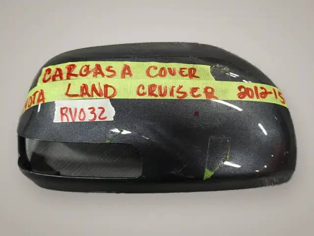
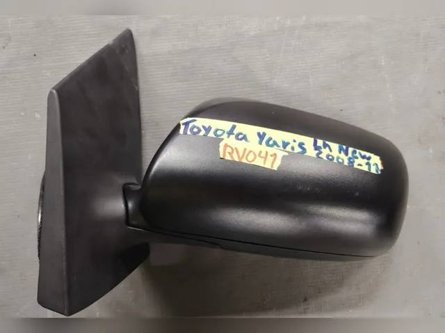
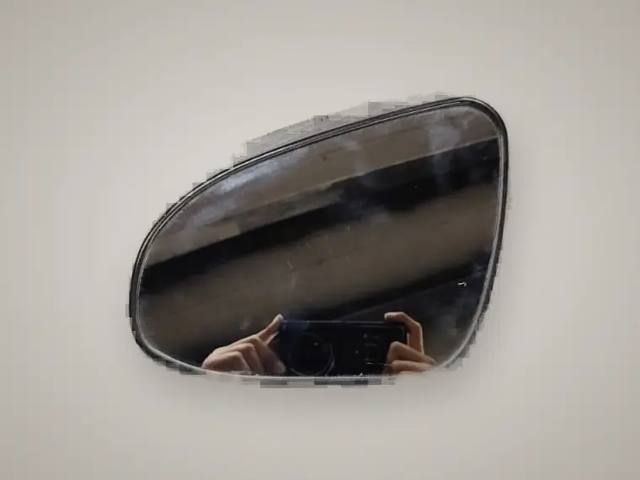
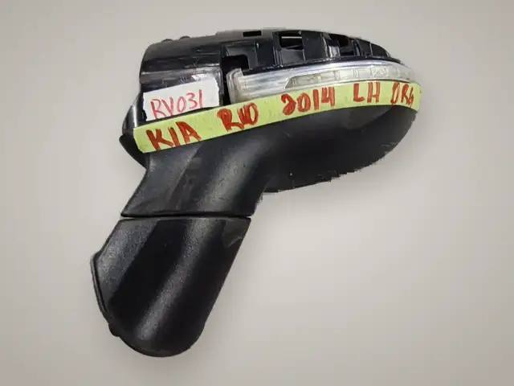
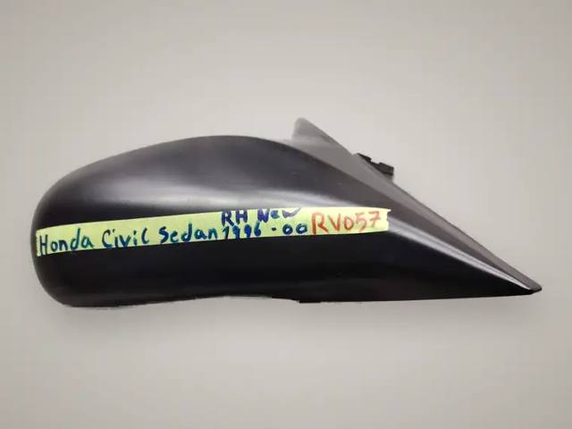
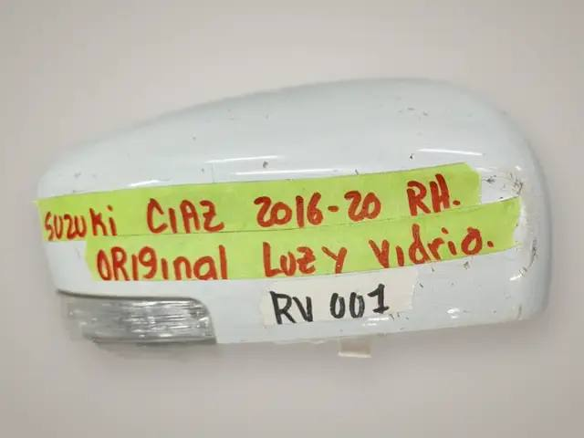
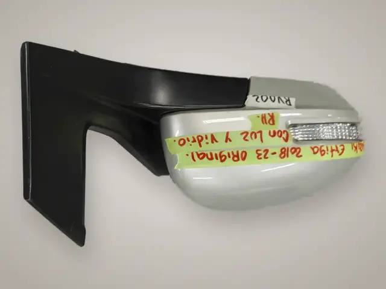
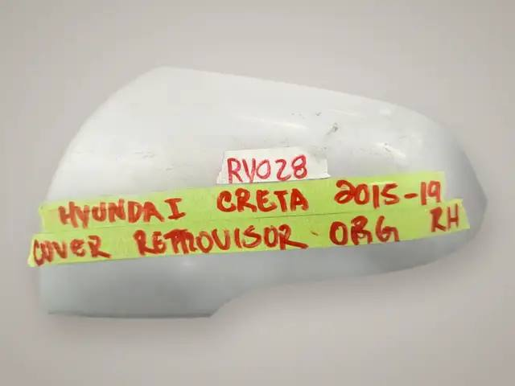
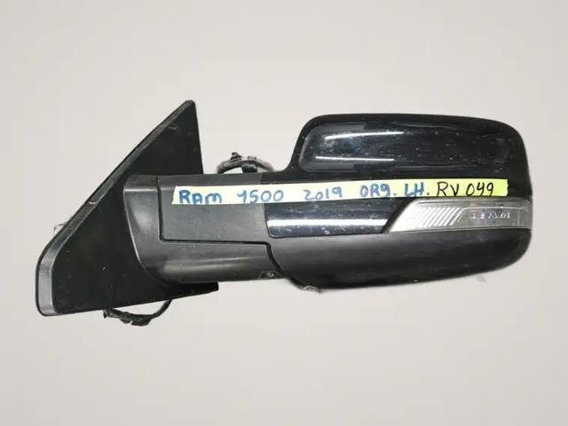

Retrovisores en Panamá
57 disponibles hoy, originales y genéricas, cada una con su foto y su código. Elige la marca de tu carro:
- Garantía de 3 días
- Foto real de cada pieza
- Efectivo, Yappy o ACH
- Lunes a sábado, 8:00 a. m. a 5:00 p. m.
Retrovisores para Toyota 14
 RV003Toyota Hiace2004-06 · lado derecho · genérico
RV003Toyota Hiace2004-06 · lado derecho · genérico RV004Toyota Corolla2014-20 · lado derecho · genérico
RV004Toyota Corolla2014-20 · lado derecho · genérico RV008Toyota Land Cruiser2008-11 · lado izquierdo · genérico
RV008Toyota Land Cruiser2008-11 · lado izquierdo · genérico RV010Toyota Highlander2020-26 · lado izquierdo · original
RV010Toyota Highlander2020-26 · lado izquierdo · original RV018Toyota Hilux2016-19 · lado izquierdo
RV018Toyota Hilux2016-19 · lado izquierdo RV023Toyota Rush2018-26 · lado derecho · original
RV023Toyota Rush2018-26 · lado derecho · original RV026Toyota Hilux / Innova2012-19 · original
RV026Toyota Hilux / Innova2012-19 · original RV029Toyota RAV42019-25 · lado derecho
RV029Toyota RAV42019-25 · lado derecho
RV032Toyota Land Cruiser2012-15 · original RV033Toyota Corolla2019-22 · lado izquierdo · original
RV033Toyota Corolla2019-22 · lado izquierdo · original RV040Toyota Yaris2006-13 · lado izquierdo
RV040Toyota Yaris2006-13 · lado izquierdo
RV041Toyota Yaris2006-13 · lado izquierdo RV046Toyota RAV42016-18 · lado derecho · original
RV046Toyota RAV42016-18 · lado derecho · original
RV053Toyota Yaris2017-22 · lado izquierdoRetrovisores para KIA 8
 RV005KIA Rio2018-23 · lado derecho · original
RV005KIA Rio2018-23 · lado derecho · original RV013KIA Picanto2011-15 · lado derecho · original
RV013KIA Picanto2011-15 · lado derecho · original RV014KIA Picanto2018-20 · lado izquierdo · original
RV014KIA Picanto2018-20 · lado izquierdo · original RV016KIA Rio2018-20 · lado izquierdo · original
RV016KIA Rio2018-20 · lado izquierdo · original
RV031KIA Rio2012-14 · lado izquierdo · original RV036KIA K27002007
RV036KIA K27002007 RV042KIA Picanto2017-23 · lado derecho · original nuevo
RV042KIA Picanto2017-23 · lado derecho · original nuevo RV051KIA Rio2011-16 · lado izquierdo · original nuevo
RV051KIA Rio2011-16 · lado izquierdo · original nuevoRetrovisores para Honda 7
 RV044Honda Civic Sedán1996-00 · lado izquierdo
RV044Honda Civic Sedán1996-00 · lado izquierdo RV054Honda Civic Sedán1996-00 · lado derecho
RV054Honda Civic Sedán1996-00 · lado derecho RV055Honda Civic Sedán1996-00 · lado derecho
RV055Honda Civic Sedán1996-00 · lado derecho RV056Honda Civic Sedán1996-00 · lado izquierdo
RV056Honda Civic Sedán1996-00 · lado izquierdo
RV057Honda Civic Sedán1996-00 · lado derecho RV058Honda Civic Sedán1996-00 · lado izquierdo
RV058Honda Civic Sedán1996-00 · lado izquierdo RV059Honda Civic Sedán1996-00 · lado izquierdo
RV059Honda Civic Sedán1996-00 · lado izquierdoRetrovisores para Mazda 6
 RV006Mazda CX-5 / CX-30 / Mazda 32020-25 · lado izquierdo · original
RV006Mazda CX-5 / CX-30 / Mazda 32020-25 · lado izquierdo · original RV009Mazda Mazda 3 / Mazda 2 / CX-5 / CX-32014-19 · lado izquierdo · original
RV009Mazda Mazda 3 / Mazda 2 / CX-5 / CX-32014-19 · lado izquierdo · original RV024Mazda CX-52017-21 · lado derecho · original nuevo
RV024Mazda CX-52017-21 · lado derecho · original nuevo RV035Mazda Mazda 32014-16 · lado izquierdo · original
RV035Mazda Mazda 32014-16 · lado izquierdo · original RV047Mazda Mazda 32004-09 · lado izquierdo · original
RV047Mazda Mazda 32004-09 · lado izquierdo · original RV050Mazda CX-52017-21 · lado izquierdo · original nuevo
RV050Mazda CX-52017-21 · lado izquierdo · original nuevoRetrovisores para Suzuki 4

RV001Suzuki Ciaz2016-20 · lado derecho · original
RV002Suzuki Ertiga2018-23 · lado derecho · original RV019Suzuki Ertiga / Swift2018-24 · lado derecho
RV019Suzuki Ertiga / Swift2018-24 · lado derecho RV021Suzuki Vitara2019-26 · lado izquierdo · original
RV021Suzuki Vitara2019-26 · lado izquierdo · originalRetrovisores para Hyundai 4
 RV007Hyundai Creta2017-20 · lado izquierdo · genérico
RV007Hyundai Creta2017-20 · lado izquierdo · genérico RV017Hyundai Tucson2006-10 · lado izquierdo · original
RV017Hyundai Tucson2006-10 · lado izquierdo · original
RV028Hyundai Creta2015-19 · lado derecho · original RV043Hyundai Tucson2009-16 · lado izquierdo
RV043Hyundai Tucson2009-16 · lado izquierdoRetrovisores para GAC 3
 RV015GAC Emzoom2026 · lado izquierdo · original
RV015GAC Emzoom2026 · lado izquierdo · original RV030GAC GS3 Power2021-26 · original
RV030GAC GS3 Power2021-26 · original RV048GAC Emzoom2023-26 · lado derecho · original
RV048GAC Emzoom2023-26 · lado derecho · originalRetrovisores para Mitsubishi 2
 RV022Mitsubishi L2002016-23 · lado derecho · original
RV022Mitsubishi L2002016-23 · lado derecho · original RV025Mitsubishi Outlander2022-26 · lado izquierdo · original
RV025Mitsubishi Outlander2022-26 · lado izquierdo · originalRetrovisores para Dodge 2
 RV038Dodge Ram 15002019-24 · original
RV038Dodge Ram 15002019-24 · original
RV049Dodge Ram 15002019-24 · lado izquierdo · originalRetrovisores para Volkswagen 1
Retrovisores para Scion 1
Retrovisores para Ford 1
 RV027Ford Explorer
RV027Ford ExplorerRetrovisores para Isuzu 1
Retrovisores para BMW 1
 RV037BMW X3
RV037BMW X3Retrovisores para Chevrolet 1
 RV039Chevrolet
RV039ChevroletRetrovisores para DFSK 1
 RV045DFSK Glory 500
RV045DFSK Glory 500Otros tipos de pieza
Parrillas 337Faros y lámparas delanteras 255Defensas traseras 248Lámparas traseras 211Defensas delanteras 209Flares 184Covers de halógena 170Guardafangos 141Halógenas y faros antiniebla 113Puertas 99Cubrepolvos 91Refuerzos delanteros 71Capós 69Tapas de baúl 69Marcos de radiador 58Estribos y rolling boards 55Defensas delanteras inferiores 52Defensas traseras inferiores 51Tapas superiores de radiador 49Vidrios 47Refuerzos traseros 26Molduras traseras 22Copas 21Guardafangos traseros 18Extensiones de defensa trasera 17Protectores inferiores 15Ventiladores 13Depósitos de agua 13Extensiones de defensa delantera 6Accesorios nuevos 5Soportes de defensa 2Covers de vagón (bedliner) 1